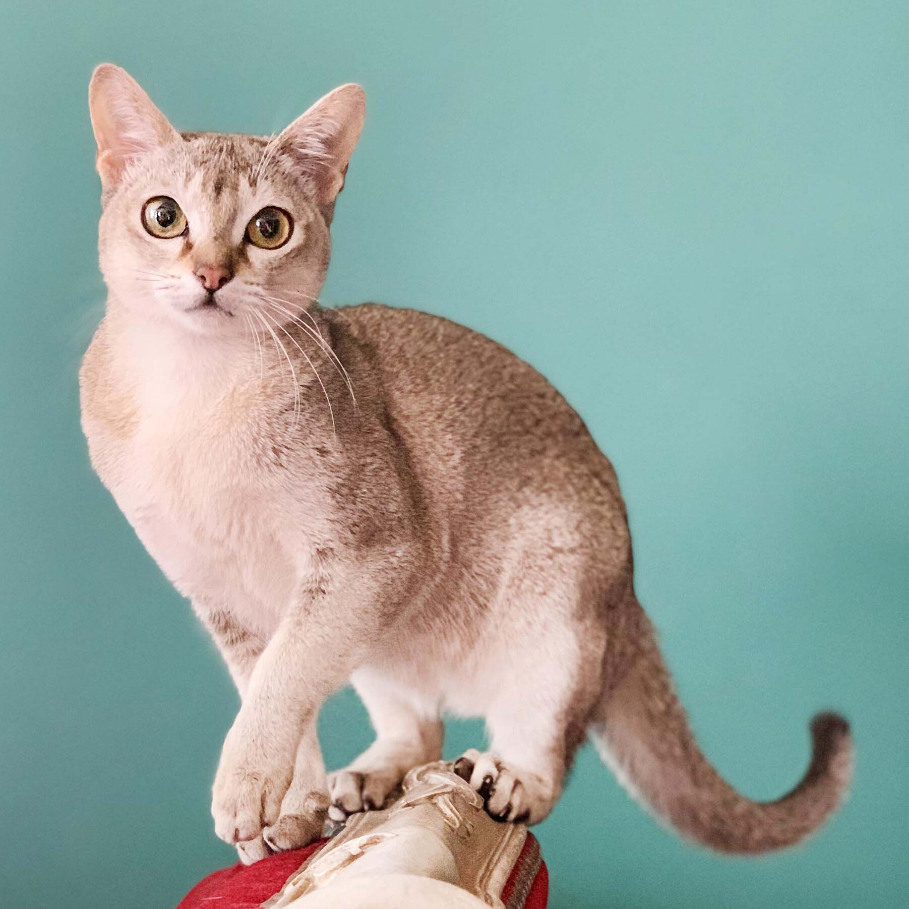

The Singapura cat is a shorthair cat that is actually one of the smallest cat breeds. They aree very active and very extroverted. They are very intelligent and love interactive play with people and toys. They come in only one color named 'sepia agouti' and have different colors on each singular hair making it sparkle in light. They are also very excelent climbers and may climb to higher vantage points to observe the area.
